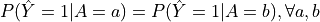
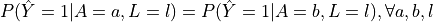
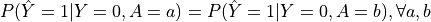
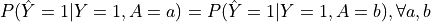
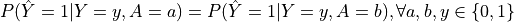

[1]:
import numpy as np
import pandas as pd
import matplotlib.pyplot as plt
from sklearn.datasets import make_classification
from sklearn.model_selection import train_test_split
from odtlearn.fair_oct import FairSPOCT
from odtlearn.utils.binarize import Binarizer, binarize
Fair Optimal Classification Trees¶
Introduction¶
The goal of this notebook is to demonstrate how users can utilize the FairOCT classes in the ODTlearn package to learn fair optimal classification trees. We will focus on the FairSPOCT class, which enforces statistical parity, and show how different parameter values affect the learned tree structure and fairness metrics. Additionally, we will introduce other fairness metrics available in the package.
Loan Approval Dataset¶
In this example, we generate a synthetic dataset related to loan approval decisions. The dataset has 5 features: Age, Income, Credit_Score, Employment_Status, Education_Level, and Previous_Default. The target variable is Loan_Approval, which indicates whether a loan application is approved (1) or denied (0). We also include a protected attribute, Gender, to simulate a fairness-related scenario.
When using the FairSPOCT class to learn fair optimal decision trees, there are several key parameters to consider:
depth: This parameter controls the maximum depth of the decision tree. A larger depth allows for more complex trees, but may lead to overfitting. It’s recommended to start with a small depth (e.g., 2 or 3) and gradually increase it while monitoring the performance on a validation set.
_lambda: This is the regularization parameter that balances the trade-off between accuracy and tree complexity. A higher value of _lambda encourages simpler trees. It’s typically set to a small value (e.g., 0.01 or 0.1) to prevent overfitting. You can tune this parameter using cross-validation.
fairness_bound: This parameter controls the strictness of the fairness constraint. A value of 1 means no fairness constraint is enforced, while smaller values enforce stricter fairness constraints. The choice of fairness_bound depends on the desired level of fairness and the trade-off with accuracy. It’s recommended to start with a value close to 1 and gradually decrease it while monitoring the fairness metrics and accuracy.
The other parameters in the FairSPOCT class include:
solver: The solver to use for the optimization problem. We use “gurobi” in this example, but you can also use “cbc” for the open-source COIN-OR Branch and Cut solver.
positive_class: The value of the class label corresponding to the desired outcome. In this case, we set it to 1, representing loan approval.
time_limit: The maximum time (in seconds) allowed for solving the optimization problem.
num_threads: The number of threads the solver should use. If set to None, it will use all available threads.
obj_mode: The objective to be used for learning the optimal decision tree. We set it to “acc” to optimize for accuracy, but you can also use “balance” for balanced accuracy or even “weighted” to specify your own weights for each observation.
verbose: If set to True, the solver will display verbose output during the optimization process.
[2]:
n = 100
X, y = make_classification(n_samples=n, n_features=5, n_informative=3,
n_redundant=1, n_classes=2, weights=[0.7, 0.3], random_state=42)
# Create a DataFrame with feature names
df = pd.DataFrame(X, columns=['Age', 'Income', 'Credit_Score', 'Employment_Status', 'Education_Level'])
df['Previous_Default'] = np.random.choice([0,1,], size=n, p = [0.9, 0.1])
df['Loan_Approval'] = y
# Add a protected attribute (e.g., Gender)
df['Gender'] = np.random.choice(['Male', 'Female'], size=n, p=[0.6, 0.4])
# Split the data into training and testing sets
X_train, X_test, y_train, y_test, gender_train, gender_test, prev_default_train, prev_default_test = train_test_split(
df.drop(['Loan_Approval', 'Previous_Default', 'Gender'], axis=1),
df['Loan_Approval'],
df['Gender'],
df['Previous_Default'],
test_size=0.2,
random_state=42
)
Next we use the Binarizer class to transform the features to binary features. Note that many of these features would likely be encoded as categorical or binary features in real data, but for our toy example we will pretend they are all continuous features.
[3]:
# Binarize continuous features
feat_binarizer = Binarizer(
real_cols=['Age', 'Income', 'Credit_Score', 'Employment_Status', 'Education_Level']
)
X_train_bin = feat_binarizer.fit_transform(X_train)
X_test_bin = feat_binarizer.transform(X_test)
Learning Fair Optimal Classification Trees with Statistical Parity¶
Let’s investigate the effect of different fairness bound values on the learned tree structure and fairness metrics.
Initialize FairSPOCT classifier with a less strict fairness bound¶
[15]:
fcl_less_strict = FairSPOCT(
solver="gurobi",
positive_class=1,
depth=3,
_lambda=0.01,
time_limit=60,
fairness_bound=1,
num_threads=None,
obj_mode="acc",
verbose=False,
)
Set parameter Username
Academic license - for non-commercial use only - expires 2025-06-28
Set parameter TimeLimit to value 60
[16]:
# Fit the classifier
fcl_less_strict.fit(X=X_train_bin,
y=y_train.values,
protect_feat=gender_train.map({'Male': 0, 'Female': 1}).values.reshape(-1,1),
legit_factor=prev_default_train.values)
Set parameter NodeLimit to value 1073741824
Set parameter SolutionLimit to value 1073741824
Set parameter IntFeasTol to value 1e-06
Set parameter Method to value 3
Gurobi Optimizer version 10.0.2 build v10.0.2rc0 (mac64[arm])
CPU model: Apple M1 Pro
Thread count: 8 physical cores, 8 logical processors, using up to 8 threads
Optimize a model with 7232 rows, 3785 columns and 29354 nonzeros
Model fingerprint: 0x43381646
Variable types: 30 continuous, 3755 integer (3755 binary)
Coefficient statistics:
Matrix range [2e-02, 1e+00]
Objective range [1e-02, 1e+00]
Bounds range [1e+00, 1e+00]
RHS range [1e+00, 1e+00]
Found heuristic solution: objective 56.4300000
Presolve removed 3367 rows and 996 columns
Presolve time: 0.33s
Presolved: 3865 rows, 2789 columns, 19713 nonzeros
Variable types: 28 continuous, 2761 integer (2759 binary)
Concurrent LP optimizer: primal simplex, dual simplex, and barrier
Showing barrier log only...
Root barrier log...
Ordering time: 0.01s
Barrier statistics:
Dense cols : 141
AA' NZ : 1.943e+04
Factor NZ : 1.051e+05 (roughly 4 MB of memory)
Factor Ops : 8.299e+06 (less than 1 second per iteration)
Threads : 6
Objective Residual
Iter Primal Dual Primal Dual Compl Time
0 4.97225075e+03 3.00467936e+04 7.17e+02 2.47e-01 5.00e+01 0s
Barrier performed 0 iterations in 0.48 seconds (0.31 work units)
Barrier solve interrupted - model solved by another algorithm
Solved with dual simplex
Root relaxation: objective 7.918750e+01, 2041 iterations, 0.11 seconds (0.06 work units)
Nodes | Current Node | Objective Bounds | Work
Expl Unexpl | Obj Depth IntInf | Incumbent BestBd Gap | It/Node Time
0 0 79.18750 0 401 56.43000 79.18750 40.3% - 0s
H 0 0 69.2900000 79.18750 14.3% - 0s
H 0 0 70.2600000 79.18750 12.7% - 0s
0 0 79.18390 0 655 70.26000 79.18390 12.7% - 0s
0 0 79.18000 0 703 70.26000 79.18000 12.7% - 0s
0 0 79.18000 0 651 70.26000 79.18000 12.7% - 1s
0 0 79.18000 0 644 70.26000 79.18000 12.7% - 1s
0 0 79.18000 0 604 70.26000 79.18000 12.7% - 1s
0 0 79.17900 0 572 70.26000 79.17900 12.7% - 1s
H 0 0 71.2500000 79.17701 11.1% - 1s
0 0 79.17701 0 324 71.25000 79.17701 11.1% - 1s
H 0 0 73.2200000 79.17701 8.14% - 1s
0 0 79.17701 0 555 73.22000 79.17701 8.14% - 1s
0 0 79.17468 0 374 73.22000 79.17468 8.13% - 1s
0 0 79.17455 0 554 73.22000 79.17455 8.13% - 1s
0 0 79.17292 0 340 73.22000 79.17292 8.13% - 2s
0 0 79.17000 0 573 73.22000 79.17000 8.13% - 2s
0 0 79.17000 0 553 73.22000 79.17000 8.13% - 2s
0 2 79.17000 0 553 73.22000 79.17000 8.13% - 2s
* 260 140 28 74.1800000 79.17000 6.73% 148 3s
H 339 159 75.1800000 79.17000 5.31% 138 3s
H 340 159 76.1600000 79.17000 3.95% 138 3s
H 344 159 76.1700000 79.17000 3.94% 139 3s
1028 345 77.66500 18 376 76.17000 79.16444 3.93% 138 5s
* 1154 342 21 76.1800000 79.16000 3.91% 135 5s
Cutting planes:
Gomory: 1
Cover: 31
MIR: 4
Flow cover: 3
Inf proof: 2
Zero half: 81
Explored 5122 nodes (570604 simplex iterations) in 9.22 seconds (12.15 work units)
Thread count was 8 (of 8 available processors)
Solution count 10: 76.18 76.17 76.16 ... 56.43
Optimal solution found (tolerance 1.00e-04)
Best objective 7.618000000000e+01, best bound 7.618000000000e+01, gap 0.0000%
User-callback calls 12273, time in user-callback 0.14 sec
[16]:
FairSPOCT(solver=gurobi,depth=3,time_limit=60,num_threads=None,verbose=False)
The fit function is used to train the fair optimal classification tree on the given dataset. It takes the following arguments:
X: The feature matrix containing the predictive features for each instance.y: The target vector indicating the class labels for each instance.protect_feat: The protected feature to be used for enforcing fairness constraints. In this example, we use the ‘Gender’ feature.legit_factor: The legitimate factor that can justify differences in outcomes across protected groups. In this example, we use the ‘Number_of_Defaults’ feature as the legitimate factor.
When choosing features for legitimate factors versus predictive features, consider the following:
Legitimate factors should be variables that are deemed acceptable to influence the outcome, even if they may result in differences across protected groups. These factors should be based on domain knowledge and societal norms. For example, in a loan approval scenario, the number of previous loan defaults might be considered a legitimate factor.
Predictive features, on the other hand, are variables that are used to make predictions but should not lead to unfair treatment of protected groups. These features should be carefully selected to avoid perpetuating biases or discrimination. For instance, while ‘Age’ and ‘Income’ might be predictive of loan approval, they should not be used in a way that unfairly disadvantages certain protected groups.
It is essential to engage with domain experts, stakeholders, and affected communities to determine which features should be considered legitimate factors and which should be used solely for prediction purposes. This helps ensure that the fair optimal classification tree aligns with the specific fairness requirements and societal expectations of the problem at hand.
In addition to looking at the progress log displayed when calling fit, we can check optimization statistics by looking at properties such as optim_gap and num_solutions.
[17]:
fcl_less_strict.optim_gap
[17]:
0.0
We also provide a simple function allowing users to plot the search progress log over time. Note that you must set the attribute store_search_progress_log to True before calling the fit method to ensure that the bound information is stored.
[ ]:
fcl_progress_example = FairSPOCT(
solver="gurobi",
positive_class=1,
depth=3,
_lambda=0.01,
time_limit=60,
fairness_bound=1,
num_threads=None,
obj_mode="acc",
verbose=False,
)
fcl_progress_example.store_search_progress_log = True
[ ]:
# Fit the classifier
fcl_progress_example.fit(X=X_train_bin,
y=y_train.values,
protect_feat=gender_train.map({'Male': 0, 'Female': 1}).values.reshape(-1,1),
legit_factor=prev_default_train.values)
Once the optimal decision tree has been fit, you can generate a customizable a plot of the upper and lower bounds by calling the plot_search_progress method.
[19]:
fcl_progress_example.plot_search_progress(log_scale=True)
[19]:
<AxesSubplot:title={'center':'Search Progress'}, xlabel='Time (s)', ylabel='Objective Bound'>

Next we calculate the fairness metric and accuracy on the test data.
[20]:
sp_metric = fcl_less_strict.calc_metric(
protect_feat=gender_test.map({'Male': 0, 'Female': 1}).values.reshape(-1,1),
y= fcl_less_strict.predict(X_test_bin))
[8]:
print("Statistical Parity on Testing Set (Less Strict Fairness Bound):")
print(pd.DataFrame(
sp_metric.items(),
columns=["(p,y)", "P(Y=y|P=p)"],
))
Statistical Parity on Testing Set (Less Strict Fairness Bound):
(p,y) P(Y=y|P=p)
0 (0, 0) 0.928571
1 (1, 0) 0.500000
2 (0, 1) 0.071429
3 (1, 1) 0.500000
[9]:
test_acc = np.mean(fcl_less_strict.predict(X_test_bin) == y_test)
print(f"Test Accuracy (Less Strict Fairness Bound): {test_acc:.3f}")
Test Accuracy (Less Strict Fairness Bound): 0.850
We can also plot the learned decision tree. Notice that we can pass shorter versions of the feature names to the plot_tree method to make the plot easier to read. We can also adjust the distance between levels of the tree using the distance argument.
[10]:
fig, ax = plt.subplots(figsize=(10,5))
fcl_less_strict.plot_tree(ax=ax,
feature_names = ['Age_0', 'Age_1', 'Age_2', 'Age_3', 'Income_0', 'Income_1', 'Income_2',
'Income_3', 'C_0', 'C_1', 'C_2',
'C_3', 'Emp_0', 'Emp_1',
'Emp_2', 'Emp_3', 'Edu_0',
'Edu_1', 'Edu_2', 'Edu_3'],
distance=0.6)
plt.show()

Initialize FairSPOCT classifier with a stricter fairness bound¶
[11]:
fcl_strict = FairSPOCT(
solver="gurobi",
positive_class=1,
depth=3,
_lambda=0.01,
time_limit=60,
fairness_bound=0.05,
num_threads=None,
obj_mode="acc",
verbose=False,
)
Set parameter Username
Academic license - for non-commercial use only - expires 2025-06-28
Set parameter TimeLimit to value 60
[12]:
# Fit the classifier
fcl_strict.fit(X=X_train_bin,
y=y_train.values,
protect_feat=gender_train.map({'Male': 0, 'Female': 1}).values.reshape(-1,1),
legit_factor=prev_default_train.values)
Set parameter NodeLimit to value 1073741824
Set parameter SolutionLimit to value 1073741824
Set parameter IntFeasTol to value 1e-06
Set parameter Method to value 3
Gurobi Optimizer version 10.0.2 build v10.0.2rc0 (mac64[arm])
CPU model: Apple M1 Pro
Thread count: 8 physical cores, 8 logical processors, using up to 8 threads
Optimize a model with 7232 rows, 3785 columns and 29354 nonzeros
Model fingerprint: 0x7a7d351e
Variable types: 30 continuous, 3755 integer (3755 binary)
Coefficient statistics:
Matrix range [2e-02, 1e+00]
Objective range [1e-02, 1e+00]
Bounds range [1e+00, 1e+00]
RHS range [5e-02, 1e+00]
Found heuristic solution: objective 56.4300000
Presolve removed 3367 rows and 968 columns
Presolve time: 0.20s
Presolved: 3865 rows, 2817 columns, 21981 nonzeros
Variable types: 28 continuous, 2789 integer (2787 binary)
Concurrent LP optimizer: primal simplex, dual simplex, and barrier
Showing barrier log only...
Root barrier log...
Ordering time: 0.06s
Barrier statistics:
Dense cols : 31
AA' NZ : 9.482e+04
Factor NZ : 3.109e+05 (roughly 5 MB of memory)
Factor Ops : 6.778e+07 (less than 1 second per iteration)
Threads : 6
Objective Residual
Iter Primal Dual Primal Dual Compl Time
0 3.56897422e+03 3.58312641e+04 2.51e+02 2.35e-01 4.49e+01 0s
1 2.60794849e+03 3.16134346e+04 1.84e+02 1.38e+00 2.52e+01 0s
2 2.96551428e+02 1.88011056e+04 1.79e+01 8.11e-04 3.83e+00 0s
3 1.05663007e+02 5.30675595e+03 4.41e+00 1.26e-03 8.77e-01 0s
4 4.58629616e+01 8.29251644e+02 1.52e-01 4.53e-04 9.13e-02 0s
5 5.50336865e+01 1.43154251e+02 3.47e-03 5.50e-05 9.83e-03 0s
6 7.07618020e+01 1.01799613e+02 6.51e-04 1.57e-05 3.46e-03 0s
7 7.71322505e+01 8.18862169e+01 1.46e-04 2.40e-06 5.31e-04 0s
8 7.91254856e+01 7.92213777e+01 1.65e-06 1.45e-07 1.07e-05 0s
9 7.91623691e+01 7.92031912e+01 3.24e-07 7.70e-08 4.55e-06 0s
10 7.91746197e+01 7.91934019e+01 8.97e-08 3.95e-08 2.09e-06 0s
11 7.91797439e+01 7.91859055e+01 1.84e-08 1.34e-08 6.88e-07 0s
12 7.91812351e+01 7.91835130e+01 3.08e-09 5.84e-09 2.54e-07 0s
13 7.91814581e+01 7.91818461e+01 1.56e-09 5.12e-10 4.36e-08 0s
14 7.91816584e+01 7.91816746e+01 1.41e-10 2.60e-11 1.81e-09 0s
15 7.91816667e+01 7.91816667e+01 4.68e-12 3.14e-13 1.82e-12 0s
Barrier solved model in 15 iterations and 0.33 seconds (0.42 work units)
Optimal objective 7.91816667e+01
Solved with barrier
Root relaxation: objective 7.918167e+01, 322 iterations, 0.13 seconds (0.14 work units)
Nodes | Current Node | Objective Bounds | Work
Expl Unexpl | Obj Depth IntInf | Incumbent BestBd Gap | It/Node Time
0 0 79.18167 0 708 56.43000 79.18167 40.3% - 0s
0 0 79.18130 0 694 56.43000 79.18130 40.3% - 0s
0 0 79.18130 0 664 56.43000 79.18130 40.3% - 0s
0 0 79.18000 0 762 56.43000 79.18000 40.3% - 0s
0 0 79.18000 0 755 56.43000 79.18000 40.3% - 0s
0 0 79.18000 0 771 56.43000 79.18000 40.3% - 0s
0 0 79.18000 0 771 56.43000 79.18000 40.3% - 0s
H 0 0 60.3600000 79.18000 31.2% - 0s
0 0 79.18000 0 767 60.36000 79.18000 31.2% - 0s
0 0 79.17882 0 757 60.36000 79.17882 31.2% - 0s
H 0 2 73.2000000 79.17838 8.17% - 0s
0 2 79.17838 0 757 73.20000 79.17838 8.17% - 0s
H 79 47 75.1800000 79.17838 5.32% 209 1s
H 266 99 75.1900000 79.17838 5.30% 164 2s
1831 427 77.84500 16 295 75.19000 78.19003 3.99% 124 5s
* 4038 448 32 76.1600000 77.16000 1.31% 104 6s
Cutting planes:
Gomory: 6
Cover: 21
Zero half: 19
Explored 5421 nodes (516269 simplex iterations) in 6.90 seconds (11.48 work units)
Thread count was 8 (of 8 available processors)
Solution count 6: 76.16 75.19 75.18 ... 56.43
Optimal solution found (tolerance 1.00e-04)
Best objective 7.616000000000e+01, best bound 7.616000000000e+01, gap 0.0000%
[12]:
FairSPOCT(solver=gurobi,depth=3,time_limit=60,num_threads=None,verbose=False)
Checking the optim_gap again:
[13]:
fcl_strict.optim_gap
[13]:
0.0
[14]:
sp_metric = fcl_strict.calc_metric(
protect_feat=gender_test.map({'Male': 0, 'Female': 1}).values.reshape(-1,1),
y= fcl_less_strict.predict(X_test_bin))
[15]:
# Evaluate fairness and accuracy on the testing set
print("Statistical Parity on Testing Set (Stricter Fairness Bound):")
print(pd.DataFrame(
sp_metric.items(),
columns=["(p,y)", "P(Y=y|P=p)"],
))
Statistical Parity on Testing Set (Stricter Fairness Bound):
(p,y) P(Y=y|P=p)
0 (0, 0) 0.928571
1 (1, 0) 0.500000
2 (0, 1) 0.071429
3 (1, 1) 0.500000
[16]:
test_acc = np.mean(fcl_strict.predict(X_test_bin) == y_test)
print(f"Test Accuracy (Stricter Fairness Bound): {test_acc:.3f}")
Test Accuracy (Stricter Fairness Bound): 0.850
[17]:
fig, ax = plt.subplots(figsize=(10,5))
fcl_strict.plot_tree(ax=ax,
feature_names = ['Age_0', 'Age_1', 'Age_2', 'Age_3', 'Income_0', 'Income_1', 'Income_2',
'Income_3', 'C_0', 'C_1', 'C_2',
'C_3', 'Emp_0', 'Emp_1',
'Emp_2', 'Emp_3', 'Edu_0',
'Edu_1', 'Edu_2', 'Edu_3'],
distance=0.6)
plt.show()
Comparing the results of the two FairSPOCT classifiers with different fairness bound values, we can observe the following:
The classifier with a less strict fairness bound (0.2) allows for a larger difference in the probability of loan approval between males and females. The statistical parity metric shows that the probability of loan approval is higher for one gender group compared to the other.
In contrast, the classifier with a stricter fairness bound (0.05) enforces a much smaller difference in the probability of loan approval between males and females. The statistical parity metric is closer to being equal for both gender groups.
The decision trees learned by the two classifiers may differ in structure and the features used for splitting, as the stricter fairness bound constrains the tree learning process to ensure a more balanced outcome across the protected groups.
The accuracy of the classifier with a stricter fairness bound may be slightly lower compared to the classifier with a less strict fairness bound. This is because enforcing a stricter fairness constraint can limit the classifier’s ability to optimize for accuracy.
These observations demonstrate the trade-off between fairness and accuracy when using fairness constraints in decision tree learning. By adjusting the fairness bound value, users can control the level of fairness enforced in the learned tree, while considering the potential impact on accuracy.
Additional Supported Fairness Metrics¶
Now that we have seen how the FairSPOCT class can be used to learn fair optimal classification trees and the impact of the fairness bound on the learned trees and fairness metrics, let’s explore the other fairness metrics available in the ODTlearn package.
In the previous sections, we focused on using the FairSPOCT class to learn fair optimal classification trees with statistical parity constraints. However, the ODTlearn package provides implementations for several other fairness metrics, each capturing different aspects of fairness. These include:
FairCSPOCT: Enforces conditional statistical parity
FairPEOCT: Enforces predictive equality
FairEOppOCT: Enforces equal opportunity
FairEOddsOCT: Enforces equalized odds
Each of these classes follows a similar interface to FairSPOCT, with the main difference being the fairness metric they enforce.
Here’s an overview of each fairness metric and how it is calculated:
Statistical Parity (FairSPOCT):
Definition: A classifier satisfies statistical parity if the probability of receiving a positive outcome is equal across all protected groups.
Equation: 
is the predicted outcome, and
 is the protected attribute.
is the protected attribute.
Conditional Statistical Parity (FairCSPOCT):
Definition: A classifier satisfies conditional statistical parity if the probability of receiving a positive outcome is equal across all protected groups, conditioned on a set of legitimate factors.
Equation: 
is the predicted outcome,
is the protected attribute, and  represents the legitimate factors.
represents the legitimate factors.
Predictive Equality (FairPEOCT):
Definition: A classifier satisfies predictive equality if the false positive rates are equal across all protected groups.
Equation: 
is the predicted outcome,
 is the true outcome, and is the protected attribute.
is the true outcome, and is the protected attribute.
Equal Opportunity (FairEOppOCT):
Definition: A classifier satisfies equal opportunity if the true positive rates are equal across all protected groups.
Equation: 
is the predicted outcome,
is the true outcome, and is the protected attribute.
Equalized Odds (FairEOddsOCT):
Definition: A classifier satisfies equalized odds if both the true positive rates and false positive rates are equal across all protected groups.
Equation: 
is the predicted outcome,
is the true outcome, and is the protected attribute.
When applying fairness constraints to a decision tree, it is crucial to carefully choose a fairness metric that aligns with the specific use case and the societal or legal requirements of the problem at hand. Different fairness metrics capture different aspects of fairness and may lead to different trade-offs between fairness and accuracy.
For example, if the goal is to ensure that the overall proportion of positive outcomes is similar across protected groups, statistical parity (FairSPOCT) would be an appropriate choice. However, if the focus is on ensuring that the classifier makes similar mistakes across protected groups, predictive equality (FairPEOCT) might be more suitable.
It is important to note that achieving fairness in machine learning is a complex and ongoing process that requires careful consideration of the societal context, potential biases in the data, and the limitations of the chosen fairness metric. Engaging with domain experts, stakeholders, and affected communities is essential to understand the specific fairness requirements of the problem and select the most appropriate fairness metric or combination of metrics.